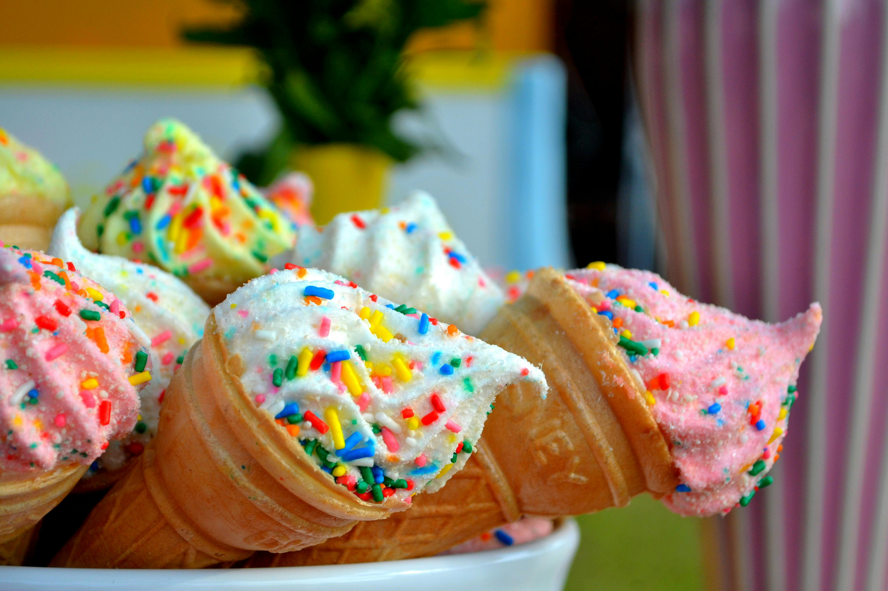

A new adventure in an ice cream
we beleive that simple nature food tastes best.
Our ice cream is
lovingly handmade in small batchesin the
heartusing only simple,natural
and fresh local ingredients of adventure and discovery.
Our core flavours



Services
Homemade ice cream
When was the last time you made homemade ice cream? If it wasn’t this summer, it was wayyy too long ago. Break out your ice cream maker, and make this homemade ice cream recipe stat!
You can buy vanilla ice cream at any grocery store, but it’ll never taste as good as the stuff you make yourself. This homemade ice cream is rich and creamy, with an indulgent vanilla flavor that even chocolate aficionados will love. And the best part? This homemade ice cream recipe is so easy to make. We’re talking 5 ingredients and 15-ish minutes of hands-on prep. Full disclosure, there are a few hands-off parts of this recipe that require some patience, but once you taste this homemade ice cream, I think you’ll agree that every second of waiting was worth it. It really is the best summer treat.
Homemade ice cream recipe ingredients
Vanilla Ice Cream Recipe Ingredients
My homemade vanilla ice cream recipe starts with 5 basic ingredients:
Heavy cream – It creates the rich ice cream base. For a dairy-free alternative, check out this vegan ice cream recipe!
Whole milk – I don’t recommend replacing it with reduced fat or skim. Whole milk’s higher fat content ensures that the homemade ice cream comes out creamy, not icy.
Cane sugar – For sweetness.
Vanilla extract – For warm vanilla flavor. If you happen to have vanilla bean paste on hand, it’s a fun alternative. It gives the ice cream the same rich vanilla flavor, plus a speckled vanilla bean appearance.
And salt – To make all the flavors pop!Find the complete recipe with measurements below.
Q: What about eggs? Some homemade ice cream recipes call for eggs or egg yolks to make the ice cream richer or thicker. I don’t use them here because leaving them out makes this recipe ultra-simple to prepare. And for my money, it’s just as delicious as one with a custard base!
Heavy cream, milk, sugar, vanilla, and salt in saucepan with whisk
How to Make Homemade Ice Cream
So, you have your ingredients! Here’s my simple method for how to make ice cream:
First thing’s first! At least 12 hours before you want to make homemade ice cream, freeze the bowl of your ice cream maker. It needs to be fully chilled in order for the ice cream to firm up.
Next, make the ice cream base. I recommend doing this step anywhere from 2 to 24 hours in advance. If you do it less than 2 hours ahead, the ice cream won’t thicken as nicely when you churn it
.
Combine the cream, milk, sugar, vanilla, and salt in a medium saucepan over medium-low heat. Warm for 5 minutes, whisking often, until the sugar is fully dissolved and the mixture is warmed through.
Then, chill the ice cream base. Transfer it to a heatproof bowl, cover, and chill for 2 hours or overnight.
Homemade ice cream in ice cream maker
Churning Homemade Ice Cream
When you’re ready to make ice cream, churn the ice cream mixture in your ice cream maker according the manufacturer’s instructions.
We have the KitchenAid stand mixer ice cream maker attachment (we’re obsessed!), and we typically churn the ice cream base for 20 to 30 minutes. This Cuisinart Ice Cream maker is also great.
Note: The ice cream will have a soft texture immediately after churning, similar to soft serve. It’s delicious that way, but I like it even better after 2+ hours in the freezer. Then, it’s perfectly scoopable—great in a cone, on summer desserts, or on its own with toppings!
Strawberry ice cream cone
TOPPINGS & VARIATIONS
This vanilla ice cream is wonderful plain, but toppings certainly don’t hurt! Here are a few topping ideas to get you started:
Try something fruity, like strawberry compote, blueberry compote, or your favorite fresh fruit. Diced bananas, blueberries, and cherries would all be good choices.
Go nuts. Drizzle on peanut butter or almond butter, or sprinkle on toasted almonds or peanuts. Shredded coconut is a yummy topping too!
Choose chocolate. Chocolate chips are always a great option, but crumbled chocolate chip cookies or brownie chunks make for a next-level sundae.
Keep it classic. You can never go wrong with salted caramel sauce, hot fudge, and/or whipped cream.
Not feeling plain old vanilla? To make a different ice cream flavor, fold 2 to 2 1/2 cups of finely diced mix-ins into the ice cream immediately after churning. Adding fresh strawberries makes a wonderful strawberry ice cream, but another fresh fruit, mini chocolate chips, or cookie or brownie crumbles would be great too.
Storage
Use a spatula to transfer the soft ice cream from the ice cream maker into a quart-size airtight container. If you like, press a piece of plastic wrap or foil into the top of the ice cream to prevent ice crystals from forming.
Freeze for at least 2 hours and for up to a month. The ice cream will be easy to scoop on the first day, but after that, you may need to let it sit at room temperature for several minutes before you scoop it. It gets firmer after more time in the freezer.
Homemade ice cream recipe
What to Serve with Homemade Ice Cream
We love this homemade vanilla ice cream on its own, but it’s also great alongside other summer desserts. Add a scoop to any of these recipes to take it over the top:
To visit how to make strawberry ice cream
Click on this button